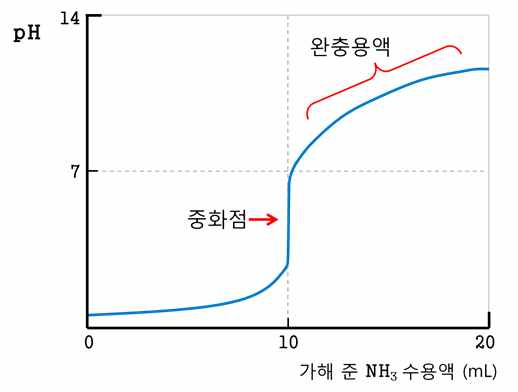

해설 2
2-1 문항해설
(문제 2-1) 산-염기 중화 반응에서의 양적 관계 및 공통 이온 효과에 의해 만들어진 용액의 특성에 대한 이해도를 평가한다.
(문제 2-2) 공통 이온 효과에 의해 만들어진 용액의 이온화도에 대한 이해도를 평가한다.
2-2 예시답안
(문제 2-1)
중화 적정 곡선 제시:
x축: 가해준 \(\text{NH}_3\)수용액 (mL)
y축: pH 혹은 \([\text{OH}^-]\)
중화점과 완충 용액 영역 표시

\(\text{NH}_3\)와 \(\text{NH}_4\text{Cl}\)이 같이 녹아 있는 용액에서는 약염기인 \(\text{NH}_3\)와 그 짝산인 \(\text{NH}_4^+\)이 평형을 이루며 존재한다. 이 용액에 산(\(\text{H}^+\))을 가하면 \(\text{NH}_3\)와 반응해서 \(\text{NH}_4^+\)을, 염기(\(\text{OH}^-\))를 가하면 \(\text{NH}_4^+\)와 반응하여 \(\text{NH}_3\)를 만든다. 어느 경우에나 르샤틀리에 원리에 따라 가해준 산이나 염기의 작용이 억제되어 용액의 pH는 유지된다.
(문제 2-2)
HA만 존재할 때의 이온화도:
| HA | \(\rightleftharpoons\) | \(\text{H}^+\) | + | \(\text{A}^-\) | |
|---|---|---|---|---|---|
| 초기 상태 | 0.01 | 0 | 0 | ||
| 변화량 | \(-x\) | \(+x\) | \(+x\) | ||
| 평형상태 | \(0.01-x\) | \(x\) | \(x\) |
\[K_a = \frac{x^2}{0.01 - x} = \frac{x^2}{0.01} = 4.0 \times 10^{-6}, \quad x = 2 \times 10^{-4}\]
\[\text{이온화도}(\alpha) = \frac{2 \times 10^{-4}}{0.01} = 2 \times 10^{-2}\]
0.05 M HCl 수용액 100 mL를 사용한 경우:
(0.05 M HCl 수용액의 부피는 임의로 취할 수 있으며, 각 경우에 있어서 HA와 HCl의 농도 변화를 고려하여 평형농도를 계산할 수 있음)
용액의 부피는 2배로 증가하며, HA와 0.05 M HCl 수용액의 농도는 2배로 묽어짐.
| HA | \(\rightleftharpoons\) | \(\text{H}^+\) | + | \(\text{A}^-\) | |
|---|---|---|---|---|---|
| 초기 상태 | 0.005 | 0.025 | 0 | ||
| 변화량 | \(-x\) | \(+x\) | \(+x\) | ||
| 평형상태 | \(0.005-x\) | \(0.025+x\) | \(x\) |
\[K_a = \frac{(0.025 + x)x}{0.005 - x} = \frac{0.025x}{0.005} = 4.0 \times 10^{-6}, \quad x = 8 \times 10^{-7}\]
\[\text{이온화도}(\alpha) = \frac{8 \times 10^{-7}}{0.005} = 1.6 \times 10^{-4}\]